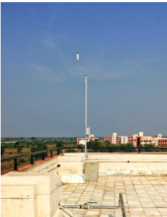
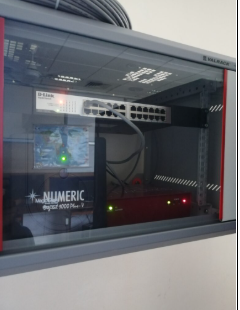

Lightning Location Network
Lightning Location Network (Ministry of Earth Science, GoI)
Owing to the importance of early warning of lightning discharge through thunderstorm clouds in different seasons, the Ministry of Earth Sciences (MoES), Govt. of India has taken up a project to study and detect the location of lightning by installing the Lightning Location Network (LLN) at different locations of India. Under this scheme, Indian Institute of Tropical Meteorology (IITM), Pune (under MoES) has installed Lightning sensor at the roof top of at the rooftop of Aryabhatta Bhawan of School of Earth, Biological and Environmental Science, Central University of South Bihar (CUSB) Gaya campus.
This lighting sensor is providing live data to a fully online system accessible 24 x7 on an interactive web map hosted by IITM, Pune. The recorded data through sensor is being sent continuously, without manual intervention, to the central processor at IITM, Pune. This is helpful to the general public awareness especially to the farmers, and others working in an open field or space. The collected data by the sensor will be used for research on thunderstorm, lightning and rainfall study.
Program Coordinator: Prof. Pradhan Parth Sarthi (ppsarthi@cub.ac.in), Department of Environmental Science, CUSB.

